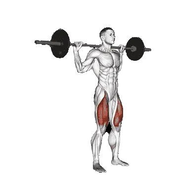

Inverso lunge con barra
Inverso lunge con barra permite consultar el peso medio y los estándares de fuerza como referencia dentro de piernas. Los músculos principales son Cuádriceps, Glúteo mayor.

Peso medio: Intermedio
Referencia para una persona de nivel intermedio.
Hombres
217 lb
Mujeres
118 lb
Peso medio de Inverso lunge con barra [1RM]
| Nivel | ||
|---|---|---|
| Principiante | 97 lb | 49 lb |
| Novato | 150 lb | 79 lb |
| Intermedio | 217 lb | 118 lb |
| Avanzado | 297 lb | 164 lb |
| Élite | 385 lb | 216 lb |
Nota: estos estándares son estimaciones de 1RM basadas en levantadores promedio. Pueden variar según el peso corporal, la edad y otros factores personales. Consulta los datos detallados en la tabla inferior.
Estándares de fuerza de Inverso lunge con barra (lb)
Hombres por peso corporal (lb) [1RM]
| Peso corporal | Principiante | Novato | Intermedio | Avanzado | Élite |
|---|---|---|---|---|---|
| 110 | 34 | 63 | 104 | 155 | 213 |
| 120 | 45 | 78 | 122 | 177 | 239 |
| 130 | 56 | 92 | 141 | 199 | 264 |
| 140 | 67 | 107 | 158 | 220 | 288 |
| 150 | 79 | 121 | 176 | 241 | 312 |
| 160 | 90 | 136 | 193 | 261 | 334 |
| 170 | 102 | 150 | 210 | 280 | 357 |
| 180 | 114 | 164 | 227 | 299 | 378 |
| 190 | 125 | 178 | 243 | 318 | 399 |
| 200 | 137 | 192 | 259 | 336 | 419 |
| 210 | 148 | 205 | 275 | 354 | 439 |
| 220 | 160 | 218 | 290 | 371 | 459 |
| 230 | 171 | 231 | 305 | 389 | 478 |
| 240 | 182 | 244 | 320 | 405 | 496 |
| 250 | 193 | 257 | 334 | 421 | 514 |
| 260 | 204 | 270 | 348 | 437 | 532 |
| 270 | 215 | 282 | 362 | 453 | 549 |
| 280 | 225 | 294 | 376 | 468 | 566 |
| 290 | 236 | 306 | 390 | 484 | 582 |
| 300 | 246 | 318 | 403 | 498 | 599 |
| 310 | 256 | 329 | 416 | 513 | 615 |
Hombres por edad [1RM]
| Edad | Principiante | Novato | Intermedio | Avanzado | Élite |
|---|---|---|---|---|---|
| 15 | 83 | 128 | 185 | 253 | 328 |
| 20 | 95 | 146 | 212 | 290 | 375 |
| 25 | 97 | 150 | 217 | 297 | 385 |
| 30 | 97 | 150 | 217 | 297 | 385 |
| 35 | 97 | 150 | 217 | 297 | 385 |
| 40 | 97 | 150 | 217 | 297 | 385 |
| 45 | 92 | 142 | 206 | 282 | 365 |
| 50 | 87 | 133 | 194 | 265 | 343 |
| 55 | 80 | 123 | 179 | 245 | 317 |
| 60 | 73 | 113 | 163 | 223 | 290 |
| 65 | 66 | 102 | 148 | 202 | 262 |
| 70 | 59 | 91 | 132 | 181 | 235 |
| 75 | 53 | 82 | 118 | 162 | 210 |
| 80 | 47 | 73 | 106 | 145 | 188 |
| 85 | 42 | 65 | 95 | 130 | 168 |
| 90 | 38 | 59 | 86 | 117 | 152 |
Mujeres por peso corporal (lb) [1RM]
| Peso corporal | Principiante | Novato | Intermedio | Avanzado | Élite |
|---|---|---|---|---|---|
| 90 | 33 | 57 | 90 | 131 | 177 |
| 100 | 37 | 63 | 97 | 139 | 186 |
| 110 | 41 | 68 | 104 | 147 | 195 |
| 120 | 45 | 73 | 110 | 154 | 203 |
| 130 | 48 | 78 | 115 | 161 | 211 |
| 140 | 52 | 82 | 121 | 167 | 218 |
| 150 | 55 | 86 | 126 | 173 | 225 |
| 160 | 59 | 90 | 131 | 179 | 232 |
| 170 | 62 | 94 | 136 | 184 | 238 |
| 180 | 65 | 98 | 140 | 190 | 244 |
| 190 | 68 | 102 | 144 | 195 | 250 |
| 200 | 71 | 105 | 149 | 199 | 255 |
| 210 | 73 | 108 | 153 | 204 | 260 |
| 220 | 76 | 112 | 156 | 209 | 265 |
| 230 | 79 | 115 | 160 | 213 | 270 |
| 240 | 81 | 118 | 164 | 217 | 275 |
| 250 | 84 | 121 | 167 | 221 | 279 |
| 260 | 86 | 124 | 171 | 225 | 284 |
Mujeres por edad [1RM]
| Edad | Principiante | Novato | Intermedio | Avanzado | Élite |
|---|---|---|---|---|---|
| 15 | 41 | 67 | 100 | 140 | 184 |
| 20 | 47 | 77 | 115 | 160 | 211 |
| 25 | 49 | 79 | 118 | 164 | 216 |
| 30 | 49 | 79 | 118 | 164 | 216 |
| 35 | 49 | 79 | 118 | 164 | 216 |
| 40 | 49 | 79 | 118 | 164 | 216 |
| 45 | 46 | 75 | 112 | 156 | 205 |
| 50 | 43 | 70 | 105 | 146 | 193 |
| 55 | 40 | 65 | 97 | 135 | 178 |
| 60 | 37 | 59 | 88 | 124 | 163 |
| 65 | 33 | 53 | 80 | 112 | 147 |
| 70 | 30 | 48 | 72 | 100 | 132 |
| 75 | 26 | 43 | 64 | 90 | 118 |
| 80 | 24 | 38 | 57 | 80 | 105 |
| 85 | 21 | 34 | 51 | 72 | 95 |
| 90 | 19 | 31 | 46 | 65 | 85 |
Nota: una barra estándar de gimnasio suele pesar 44 lb.
Músculos trabajados
| Grupo | Músculos |
|---|---|
| Músculos principales | Cuádriceps, Glúteo mayor |
| Músculos secundarios | Isquiotibiales, Aductores |
| Estabilizadores | Oblicuo externo, Tríceps sural |
| Agarre | Flexores del antebrazo |
Registra y analiza en la app Shiba
Consulta pesos, repeticiones y progreso en un solo lugar.
Cómo leer la tabla
| Nivel | Descripción | Distribución |
|---|---|---|
| Principiante | Domina la técnica correcta y entrena de forma constante durante al menos 1 mes. | Parte inferior 5% |
| Novato | Entrena de forma constante durante al menos 6 meses. | Top 80% |
| Intermedio | Entrena de forma constante durante al menos 2 años. | Top 50% |
| Avanzado | Entrena de forma constante durante más de 5 años. | Top 20% |
| Élite | Entrena este ejercicio de forma especializada durante más de 5 años. | Top 5% |
Otros ejercicios
Piernas
Puente de glúteos con barra
Piernas / Barra
Press a una pierna
Piernas
Trineo press elevación de gemelos
Piernas
Sentadilla a una pierna
Piernas
Belt sentadilla
Piernas
Safety bar sentadilla
Piernas
Pistol sentadilla
Piernas
Sentadilla con pausa
Piernas
Hack squat con barra
Piernas / Barra
Sentadilla sumo
Piernas
Patada en cable
Piernas / Cable
Peso corporal elevación de gemelos
Piernas